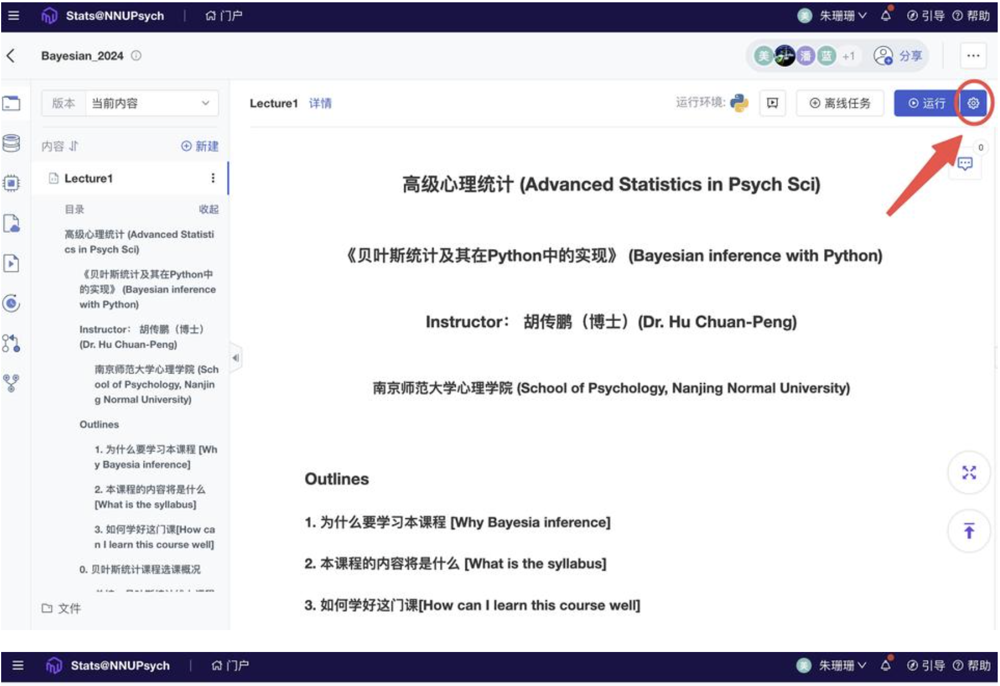
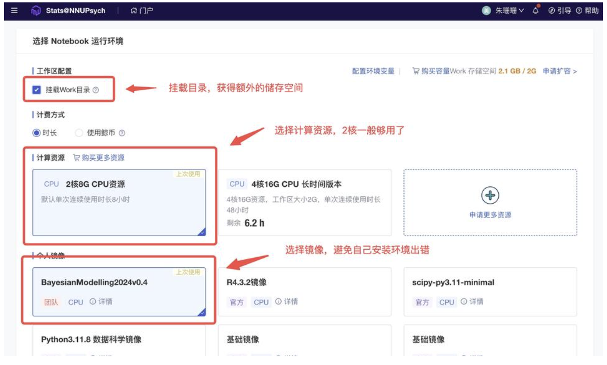
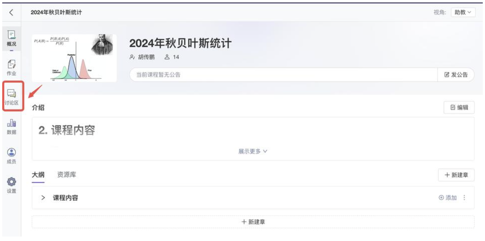
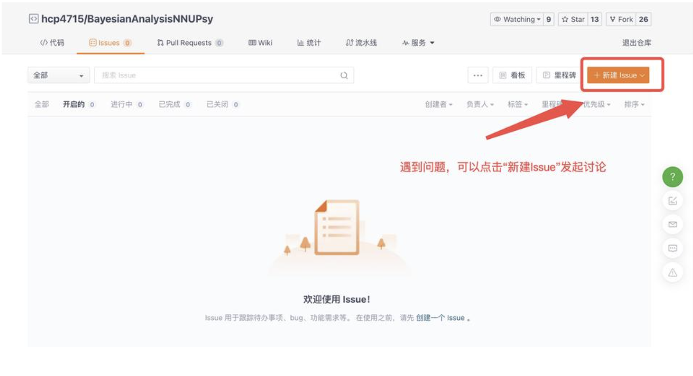
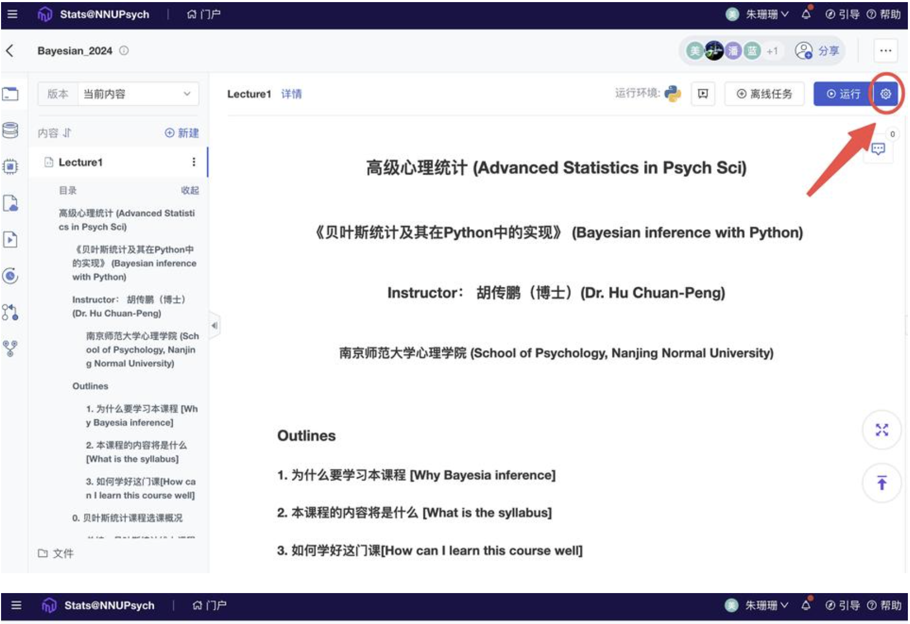
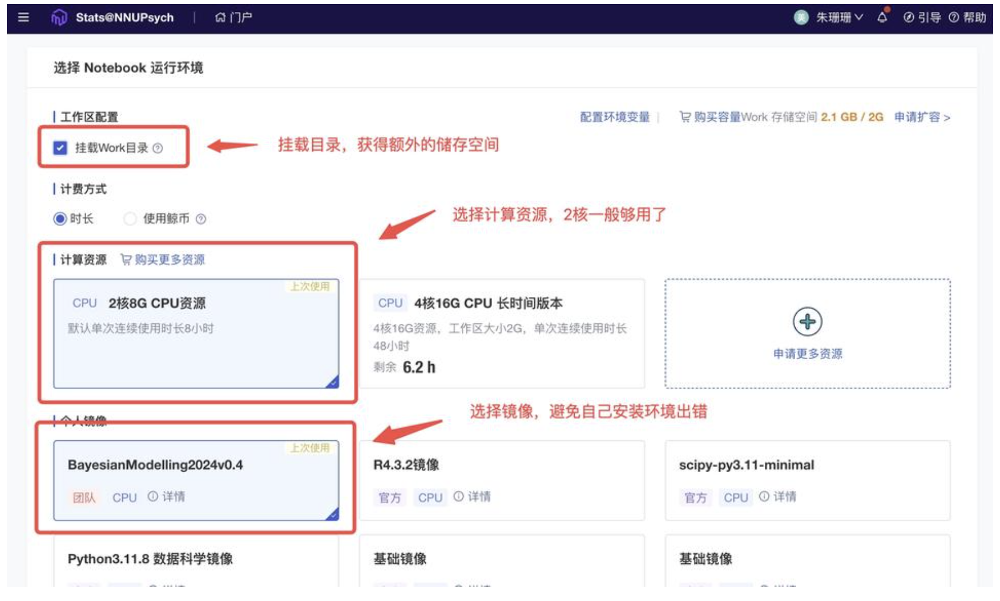
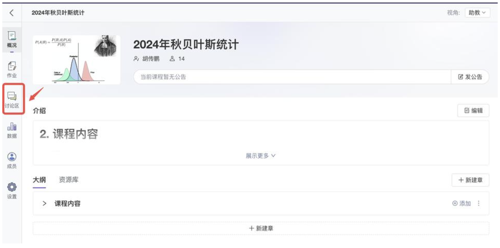
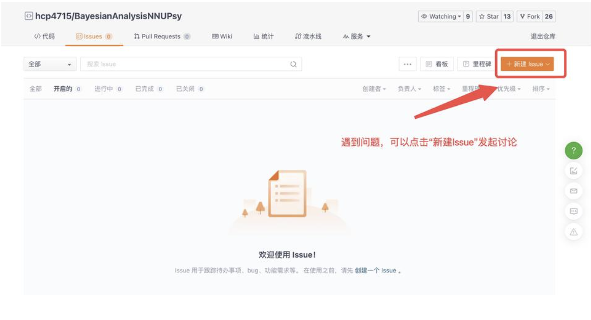

Part 1: 【和鲸平台】整合教学+练习#
本学期的贝叶斯课程将通过和鲸平台进行授课与代码练习，请大家提前注册好和鲸平台的账号。关于和鲸平台的运行环境设置说明如下：


更重要的是：任何问题都可以微信群或者平台里发帖提问。
助教和老师会尽快回复的。

当然，你也可以选择在gitee上进行提问。
点击链接访问gitee： https://gitee.com/hcp4715/bayesian-analysis-nnupsy

关于和鲸平台的运行环境设置说明如下：


更重要的是：任何问题都可以微信群或者平台里发帖提问。
助教和老师会尽快回复的。

当然，你也可以选择在gitee上进行提问。
点击链接访问gitee： https://gitee.com/hcp4715/bayesian-analysis-nnupsy
